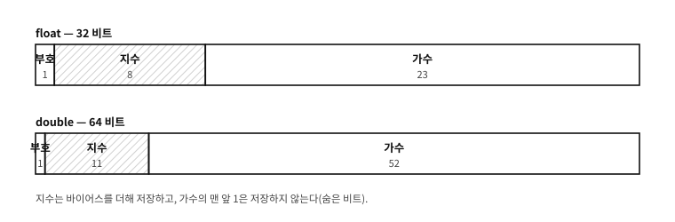

7 수의 표현 — IEEE 754라는 계약
먼저 알아야 할 것
돌아보기
6장에서 부호 있는 정수까지 비트에 담았다 — 음수를 담는 세 가지 방법이 겨루다 2의 보수로 정리되는 것까지 보았다. 그런데 여전히 전부 정수다. 1.5 같은 수는 — 비트로 어떻게 담는가?
답. 비트 자체에는 소수점이 없다. 그래서 소수점은 약속으로 만든다 — 음수를 “약속”(2의 보수)으로 만들었던 것과 같은 이치다. “소수점이 어디에 있다고 치고 읽을 것인가”를 정하는 방식이 두 갈래로 갈리는데, 소수점을 못박아 두는 쪽(고정)과 소수점을 데이터에 실어 움직이는 쪽(부동)이다. 이 장이 그 두 갈래의 이야기다.
이 장의 필요성과 맥락
%f, 52장의 비트 뜯어보기, 78장의 <math.h> 가 모두 여기서 세운 IEEE 754 계약을 다시 부른다. 근사를 늦게 배우면 그때까지 쓴 코드를 다시 봐야 한다.이 장이 끝나면
이 장에서 답할 질문
- 왜 지수에 바이어스를 더하는가 — 그냥 2의 보수로 담으면 안 되는가?
- 32비트
float와 64비트double은 실무에서 어떻게 갈라 쓰는가? - 6장의 정수 오버플로와 이 장의 반올림은 둘 다 “유한한 그릇” 문제인데, 성격이 같은 문제인가?
7.1 고정소수점 — 소수점을 약속으로 못박다#
첫 번째 방법은 놀랄 만큼 단순하다. 그냥 정수를 쓰되, 단위를 바꾼다.
돈 계산이 좋은 예다. 1,500.25원을 저장하고 싶으면, “우리 장부는 전부 전(錢, 0.01원) 단위로 적는다”고 약속하고 정수 150025를 저장하면 된다. 소수점은 어디에도 저장되지 않는다 — 읽고 쓰는 모든 사람이 “끝에서 두 자리 앞에 소수점이 있다고 친다”는 약속을 공유할 뿐이다. 이것이 고정소수점(fixed point)이다. 소수점의 위치가 약속으로 고정되어 있다.
고정소수점의 미덕은 정수 그 자체라는 것이다. 더하기와 빼기가 정수 연산만큼 빠르고 정확하며, 어림이 없다. 그래서 금액 계산과, 소수점 하드웨어가 없는 작은 임베디드 칩에서 지금도 현역이다. 약점은 뻣뻣함이다 — 아주 큰 수와 아주 작은 수를 한 약속으로 감당할 수 없다. 전 단위 장부에 은하의 질량과 원자의 질량을 같이 적을 수는 없는 노릇이다.
7.2 부동소수점 — 소수점을 데이터에 싣다#
두 번째 방법은 과학 시간에 배운 과학적 표기법을 기계에 옮긴 것이다. 처럼 수를 “알맹이 숫자”와 “10을 몇 번 곱했는가”로 나눠 적는 방식 말이다. 알맹이(가수, significand)와 곱한 횟수(지수, exponent)를 둘 다 데이터로 저장하면, 소수점이 지수를 따라 떠다닌다 — 그래서 부동소수점(floating point)이다. 기계는 10 대신 2를 쓴다: 수를 꼴로 담는다.
이렇게 하면 같은 비트 수로 어마어마한 범위를 감당할 수 있다. 은하도 원자도 한 형식에 담긴다. 대가는 정밀도다 — 알맹이 숫자의 자리 수가 유한하므로, 그 자리 수를 넘는 부분은 반올림으로 버려진다.
흔한 오해. “컴퓨터는 수학을 잘하니까, 소수 계산은 당연히 정확하다”
수학. 왜 0.1은 2진법으로 못 떨어지는가
유한 소수로 떨어지는 분수는 분모가 기수의 거듭제곱 인수로만 이루어진 경우뿐이다. 십진법(기수 )에서 은 한 자리로 끝난다. 그러나 2진법의 기수는 2뿐이라서, 분모에 5가 들어 있는 은 절대 유한하게 끝나지 않는다:
이 십진법에서 으로 무한한 것과 같은 이치다. 유한한 가수는 이 무한을 어딘가에서 잘라야 하고, 그 잘림이 근사의 근원이다.
7.3 비트가 실제로 어떻게 나뉘는가#
“가수와 지수를 함께 담는다”를 비트 배치까지 내려가 보자. IEEE 754는 한 값을 세 조각으로 나눈다 — 부호(sign) 1비트, 지수(exponent), 가수(fraction).
| 형식 | 전체 | 부호 | 지수 | 가수 |
|---|---|---|---|---|
float(단정도) | 32비트 | 1 | 8 | 23 |
double(배정도) | 64비트 | 1 | 11 | 52 |
표 7.1 — float 과 double 의 비트 나누기

그림 7.1 — float 과 double 의 비트 배치. 칸의 너비가 비트 수의 비율이다.
세 조각을 읽는 규칙은 이렇다.
- 부호: 0이면 양수, 1이면 음수. 값의 크기와는 무관한 별도의 비트라서
-0.0이 있다 — 0인데 부호 비트만 1인 값이다. - 지수: 음수 지수도 담아야 하므로 바이어스(bias)를 더해 저장한다.
float은 127을,double은 1023을 더한다. 저장된 값이 1023이면 실제 지수는 0이고, 1019면 다. - 가수: 정규화(맨 앞자리가 1이 되도록 지수를 맞춰 적는 것)된 수에서는 맨 앞자리가 언제나 1이므로 그 1을 저장하지 않는다(숨은 비트). 그래서
double은 52비트를 저장하고도 53비트만큼의 정밀도가 나온다.
즉 정규수의 값은 이렇게 복원된다.
지수 자리의 양 끝은 특별한 뜻으로 예약돼 있다.
| 지수 비트 | 가수 | 뜻 |
|---|---|---|
| 전부 0 | 0 | 영(부호 비트에 따라 +0.0 또는 -0.0) |
| 전부 0 | 0이 아님 | 비정규수(subnormal) — 숨은 비트를 0으로 보고, 0 근처를 촘촘히 메운다 |
| 전부 1 | 0 | 무한대(부호에 따라 ) |
| 전부 1 | 0이 아님 | NaN — “수가 아님” |
| 그 밖 | 무엇이든 | 정규수 — 위의 복원식 |
표 7.2 — 지수의 양 끝이 맡은 특별한 값들
이 표가 52장에서 만날 성질들의 출처다. NaN이 자기 자신과 같지 않은 것도, 무한대가 넘침의 결과로 나오는 것도, +0.0 == -0.0이면서 비트는 다른 것도 전부 이 배치에서 나온다. 52장에서 실제 비트를 찍어 하나씩 확인한다.
문. 왜 지수에 바이어스를 더하는가 — 그냥 2의 보수로 담으면 안 되는가?
답. 담을 수는 있다. 그러나 바이어스 방식에는 실용적인 이득이 있다 — 부호를 제외한 비트열을 정수처럼 비교하면 실수의 크기 순서가 그대로 나온다. 지수가 앞자리에 있고 바이어스 덕에 작은 지수가 작은 비트열이 되므로, 같은 부호의 두 양수는 비트 패턴을 부호 없는 정수로 읽어 비교해도 대소가 맞는다. 하드웨어의 비교 회로가 단순해지고, 정렬 같은 작업도 빨라진다. 2의 보수 지수였다면 이 성질이 깨진다.
7.4 근사가 일으키는 세 가지 사건#
“성실한 근사”가 실전에서 어떤 얼굴로 나타나는지, 수치로 미리 구경해 둔다. (여기서는 지면 계산으로 보이고, C 코드로 직접 실행해 보이는 것은 52장이다.)
사건 1 — 0.1 + 0.2 ≠ 0.3. 프로그래밍 세계에서 가장 유명한 등식 아닌 등식이다. 방금 본 대로 0.1도 0.2도 0.3도 2진법으로는 무한소수라서, 기계에는 각각 “가장 가까운 이웃”이 대신 담긴다. 그런데 0.1의 이웃과 0.2의 이웃을 더한 결과가, 하필 0.3의 이웃과 다른 쪽으로 반올림된다. 64비트 형식으로 실제 값을 적으면 —
- 기계 속 =
0.30000000000000004440... - 기계 속 =
0.29999999999999998889...
둘 다 0.3에 성실하게 가깝지만, 서로 같지는 않다. 그래서 “같은가?”라고 물으면(==) 기계는 정직하게 “아니오”라고 답한다.
내부 표현을 직접 들여다보면 사건의 전모가 한눈에 보인다. 64비트 형식은 [부호 1비트 | 지수 11비트 | 가수 52비트]로 나뉘는데, 이 네 수의 64비트를 16진법으로 적으면 —
| 수 | 64비트 내부 표현 (16진) |
|---|---|
| 0.1 | 3FB9 9999 9999 999A |
| 0.2 | 3FC9 9999 9999 999A |
| 0.3 | 3FD3 3333 3333 3333 |
| 0.1 + 0.2 | 3FD3 3333 3333 3334 |
표 7.3 — 같은 수의 64비트 내부 표현
읽을거리가 세 겹이다. 첫째, 0.1과 0.2의 가수에 늘어선 9999...는 2진 무한소수 0011의 순환이 16진법으로 보인 모습이고, 끝자리가 9가 아니라 A인 것은 무한을 52비트에서 자르며 반올림해 올린 흔적이다 — 수학 박스에서 본 “잘림”이 비트에 그대로 찍혀 있다. 둘째, 0.3의 가수 3333...도 같은 순환의 다른 위상이며, 이쪽은 마지막에서 내림이 됐다. 셋째 — 핵심이다 — 0.3과 0.1+0.2는 마지막 비트 하나만 다르다. 눈금 하나(전문 용어로 1 ulp) 차이의 바로 옆 이웃인 것이다. ==는 이 한 비트의 차이도 다름으로 답하므로, 부동소수점의 “같음”은 눈금 하나의 어긋남에도 깨진다.
사건 2 — 그러면 비교는 어떻게 하는가. 부동소수점의 세계에서 “같다”는 질문 자체를 바꿔야 한다 — “정확히 같은가”가 아니라 “충분히 가까운가” 로. 허용 오차(전통적으로 엡실론, 이라 부른다)를 하나 정하고, 두 수의 차이가 그 안에 들면 같다고 치는 것이다:
이것이 기본형이고, 실전에는 한 겹이 더 있다 — 수가 커지면 이웃 사이 간격도 커지므로(아래 사건 3), 고정된 대신 수의 크기에 비례하는 허용치(상대 오차)를 쓰는 것이 안전하다. 두 방식의 구체적인 사용법과 함정은 52장에서 C 코드로 다룬다. 지금 기억할 것은 한 문장이다: 부동소수점을 ==로 비교하는 코드는 거의 언제나 의심 대상이다.
사건 3 — 큰 수 곁에서 작은 수는 사라진다. 유효숫자가 유한하다는 것은, 크기가 너무 다른 두 수를 한 그릇에서 만나게 하면 작은 쪽이 통째로 사라진다는 뜻이기도 하다. 64비트 double(유효 십진 약 15–16자리) 에서 가장 깔끔하게 드러나는 자리가 근처다.
- 은 다시 이다. 더한 1이 그대로 사라진다. 그런데 는 가 되어 제대로 늘어난다. 이 기묘한 대비의 이유는 하나다 — 그 크기에서 표현 가능한 이웃 사이의 간격이 정확히 2이기 때문이다. 눈금이 2 간격이면 1은 눈금 반 칸이라 반올림에 삼켜지고, 2는 정확히 한 칸이라 살아남는다. 작은 값이 큰 값에 먹히는 이 현상을 흡수(absorption)라 부른다.
- 그래서
double이 정수를 하나도 빠짐없이 담을 수 있는 한계는 까지다. 그 위에서는 눈금 간격이 1을 넘어 정수조차 건너뛰기 시작한다 — 을 담으려 하면 다시 이 된다. “돈이나 아이디를 부동소수점에 담지 말라”는 실무 수칙이 여기서 나왔다(자바스크립트가 정수를double로 다루다 이 벽에 부딪혀BigInt를 들인 것도 같은 사연이다). - 반대 방향의 사고도 있다. 거의 같은 두 수의 뺄셈은 앞자리들이 전부 지워지고 끝자리의 어림만 남는다 — 유효숫자 열여섯 자리로 시작한 계산이 두세 자리짜리 답을 내는 것이다. 이쪽은 상쇄(cancellation)라 부르며, 수치 계산에서 정밀도를 갉아먹는 주범이다.
세 사건의 뿌리는 하나다 — 표현 가능한 수들이 띄엄띄엄한 눈금이고, 눈금 간격은 수가 클수록 넓어진다는 것. 0 근처에서는 눈금이 촘촘해 같은 수도 구별하지만, 방금 본 대로 쯤 가면 눈금 간격이 1을 넘어 정수조차 건너뛴다. “몇 자리까지 믿을 수 있는가”(유효숫자)라는 감각이 부동소수점 사용의 전부라 해도 과언이 아니다.
7.5 난립, 그리고 IEEE 754라는 계약#
부동소수점이라는 착상은 일찍부터 있었지만, 어떻게 담을 것인가 — 가수와 지수에 몇 비트씩 줄 것인가, 반올림은 어느 쪽으로 할 것인가 — 는 오랫동안 회사마다 달랐다. IBM 대형기, DEC의 VAX, Cray 슈퍼컴퓨터가 저마다 다른 형식을 썼다. 같은 프로그램이 기계를 옮기면 다른 답을 내놓았고, 수치 계산 프로그래머들은 기계마다 계산의 버릇을 새로 익혀야 했다.
1985년, 이 난립을 IEEE 754라는 표준이 통일했다. IEEE 는 이 표준을 낸 학회의 이름이다(Institute of Electrical and Electronics Engineers, 전기전자기술자협회). 형식(부호 1비트 + 지수 + 가수), 반올림 규칙, 무한대와 “수 아님”(NaN) 같은 특수값의 처리까지 못박은 정밀한 계약이다. 오늘날 사실상 모든 CPU와 GPU(graphics processing unit, 그래픽 처리 장치)가 이 계약을 따른다 — 32비트 형식(C의 float)과 64비트 형식(C의 double)이 그 대표다.
시대를 눈여겨보면 재미있다. 부동소수점의 계약(IEEE 754, 1985)과 C 언어의 계약(ANSI C, 1989 — ANSI 는 미국 표준 협회 American National Standards Institute 다)은 같은 몇 해 사이에 태어났다. 벤더마다 제멋대로이던 것을 견디다 못해 산업 전체가 “계약서를 쓰자”로 돌아선 시대였다 — 이 “계약의 시대” 이야기는 13장에서 다시 만난다.
문. 32비트 float와 64비트 double은 실무에서 어떻게 갈라 쓰는가?
답. 기본값은 double이다. 64비트 형식은 십진 유효숫자로 약 15–16자리를 감당해서 대부분의 계산에 여유가 있다. float(약 7자리)는 메모리와 대역폭이 아쉬운 곳 — 대량의 좌표, 그래픽, 기계학습 — 에서 크기의 이득으로 선택한다. “정밀도가 필요해서 double, 물량이 필요해서 float” 라고 기억하면 대강 맞다. C에서의 실제 사용은 52장에서 다룬다.
문. 6장의 정수 오버플로와 이 장의 반올림은 둘 다 “유한한 그릇” 문제인데, 성격이 같은 문제인가?
답. 뿌리는 같고 증상이 다르다. 정수의 그릇은 범위가 유한해서 끝에서 넘치고(오버플로 — 넘치기 전까지는 완전히 정확하다), 부동소수점의 그릇은 정밀도가 유한해서 어디서나 조금씩 어림된다(대신 범위는 어마어마하다). 정확하지만 좁은 그릇과, 넓지만 어림하는 그릇 — 어느 그릇을 쓸지 고르는 감각이 수를 다루는 기본기이고, C의 타입 선택 (28장, 52장)이 바로 그 고르기다.
7.6 눈으로 확인하기#
근사라는 말은 추상적이다. 기계에게 직접 물어보면 손에 잡힌다.
examples/ch07/floats.c
/* 소수를 담는 그릇을 들여다본다 --- 왜 0.1 + 0.2 가 0.3 이 아닌가.
여기 나오는 값은 IEEE 754 를 따르는 기계에서 언제나 같다. */
#include <stdio.h>
#include <stdint.h>
#include <string.h>
/* double 의 비트를 부호·지수·가수로 갈라 찍는다 */
static void show(const char *label, double v)
{
uint64_t u;
memcpy(&u, &v, sizeof u);
printf("%-10s %.17g\n", label, v);
printf(" sign %u exponent %4u fraction 0x%013llx\n",
(unsigned)(u >> 63), (unsigned)((u >> 52) & 0x7FF),
(unsigned long long)(u & 0xFFFFFFFFFFFFFULL));
}
int main(void)
{
puts("== the famous one ==");
printf("0.1 + 0.2 == 0.3 ? %s\n", (0.1 + 0.2 == 0.3) ? "yes" : "no");
printf("0.1 + 0.2 = %.17g\n", 0.1 + 0.2);
printf("0.3 = %.17g\n\n", 0.3);
puts("== why: 0.1 has no exact form in base two ==");
show("0.1", 0.1);
show("0.2", 0.2);
show("0.5", 0.5);
puts("0.5 is exact (fraction is all zeros); 0.1 and 0.2 are not.\n");
puts("== the error piles up ==");
double sum = 0.0;
for (int i = 0; i < 10; i++) sum += 0.1;
printf("adding 0.1 ten times = %.17g\n", sum);
printf("1.0 = %.17g\n", 1.0);
printf("difference = %.3g\n\n", sum - 1.0);
puts("== a narrower container loses more ==");
float f = 0.1f;
double d = 0.1;
printf("0.1 as float = %.17g\n", (double)f);
printf("0.1 as double = %.17g\n\n", d);
puts("== and some numbers are not numbers ==");
double inf = 1.0 / 0.0e0, nan = 0.0 / 0.0e0;
printf("1.0 / 0.0 = %g\n", inf);
printf("0.0 / 0.0 = %g\n", nan);
printf("nan == nan ? %s (the only value not equal to itself)\n",
(nan == nan) ? "yes" : "no");
return 0;
}
실행 결과
== the famous one ==
0.1 + 0.2 == 0.3 ? no
0.1 + 0.2 = 0.30000000000000004
0.3 = 0.29999999999999999
== why: 0.1 has no exact form in base two ==
0.1 0.10000000000000001
sign 0 exponent 1019 fraction 0x999999999999a
0.2 0.20000000000000001
sign 0 exponent 1020 fraction 0x999999999999a
0.5 0.5
sign 0 exponent 1022 fraction 0x0000000000000
0.5 is exact (fraction is all zeros); 0.1 and 0.2 are not.
== the error piles up ==
adding 0.1 ten times = 0.99999999999999989
1.0 = 1
difference = -1.11e-16
== a narrower container loses more ==
0.1 as float = 0.10000000149011612
0.1 as double = 0.10000000000000001
== and some numbers are not numbers ==
1.0 / 0.0 = inf
0.0 / 0.0 = -nan
nan == nan ? no (the only value not equal to itself)
첫 줄이 유명한 그 결과다. 0.1 + 0.2 와 0.3 을 열일곱 자리까지 찍으면 앞의 것은 0.30000000000000004, 뒤의 것은 0.29999999999999999 다. 둘 다 「0.3 에 가장 가까운 표현」인데 가까운 쪽이 서로 다르다.
까닭은 그 아래 비트에 있다. 0.5 의 가수는 전부 0 — 2진법으로 딱 떨어진다는 뜻이다. 반면 0.1 과 0.2 의 가수는 999…9a 로 끝나는 잘린 반복이다. 10진법에서 1/3 을 적으려다 0.333… 에서 끊는 것과 같은 일이 2진법에서 1/10 에 일어난다.
한 번의 오차는 눈에 안 보인다. 그런데 0.1 을 열 번 더하면 1 이 아니라 그보다 아주 조금 작은 수가 나온다 — 되풀이하면 드러나는 것이다.
끝에는 수가 아닌 값도 나온다. 0 으로 나눈 무한대와, 정의할 수 없는 결과인 NaN 이다. 특히 NaN 은 자기 자신과도 같지 않다 — x == x 가 거짓인 유일한 값이다. (NaN 의 부호가 어떻게 찍히는지는 기계와 라이브러리가 정하는 것이라 기대지 않는다.)
★ 이 시연은 「부동소수점을 쓰지 말라」는 뜻이 아니다. 그릇의 성질을 알고 쓰라는 뜻이다. 같은지 묻는 대신 얼마나 가까운지 묻는 법, 그리고 그 「얼마나」를 정하는 법은 52장에서 실제 코드로 다룬다.
표현의 사다리 첫 단을 정리하면 이렇다. 소수점은 비트에 없고 약속에 있다. 약속을 못박으면 고정소수점, 데이터에 실으면 부동소수점이고, 부동소수점의 약속은 IEEE 754라는 계약으로 통일되어 있다. 그리고 그 계약 아래의 수는 정확한 수가 아니라 성실한 근사다.
다음 단은 글자다. 사물함에 “안녕”을 담으려면 무엇을 약속해야 하는가 — 문자와 텍스트의 세계, 그리고 그 약속들이 어긋나며 남긴 흉터들의 이야기다.